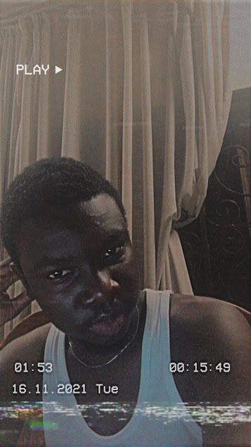

<!DOCTYPE html>
<html>
    <head>
    <meta charset="UTF-8">
    <meta http-equiv="X-UA-Compatible" content="IE=edge">
    <meta name="viewport" content="width=device-width, initial-scale=1.0">
    <link rel="stylesheet" href="style.css">
    <title>Myself</title>
    <link rel="icon" type="image/x-icon" href="image.PNG">   <!--favicon-->
    </head>
</html>
<body id = "body2">
    <br>
    <h3>Myself and Profile Picture</h3>
    <br>
        
        <br><br>
        <p>
            I am <b>Kwabena Adu - Tekyi</b> by name.<br>
            I come from a family of six and I occupy the sixth position.<br> 
            My father is an accountant, while my mother is a teacher.<br>
            I am currently in level 200. I am focus driven and hardworking which reflects in my grades.<br>
            My professional aspiration is to obtain a bachelor's degree in <mark>Information Technology at the University of Ghana</mark>,
            which would promote my career goal of being a Cyber security Analyst.<br>
            The reason why I want to pursue a career in the cyber security line is to someday 
            be able to provide <i>technologies, processes and controls to protect systems, networks, programs, devices
            and data</i> from cyber attacks people in Ghana.<br>
            Hence, I study hard because without a degree I cannot attain these goals.<br>
            Aside my love for everything computer related, I love to travel and meet new people.<br>
            I am an outgoing person and I love to have fun. My live centers on improving humanity and I love where I am at right now.
        </p>

</body>